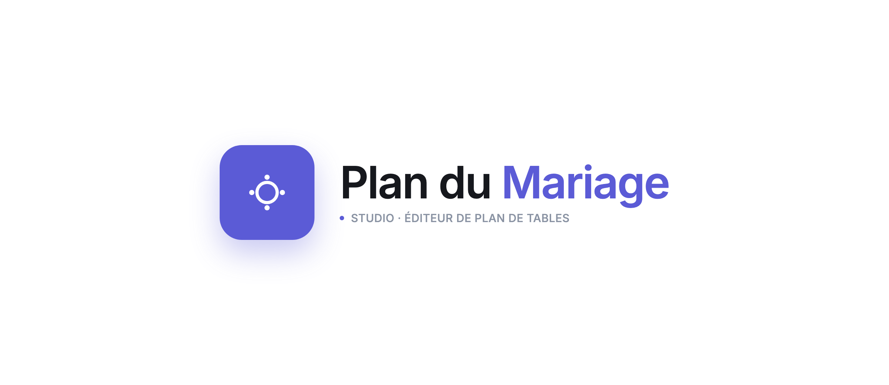
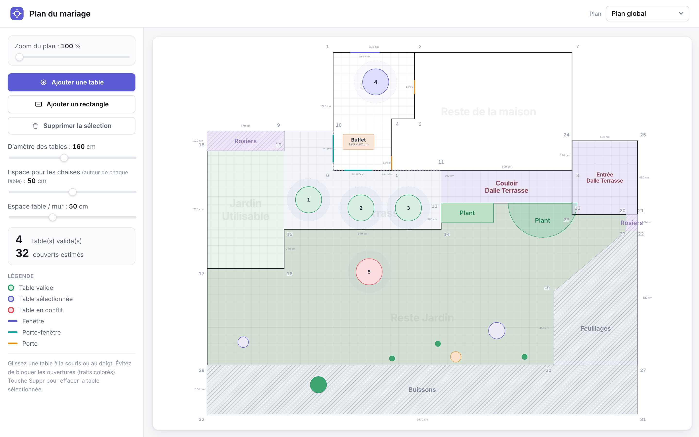
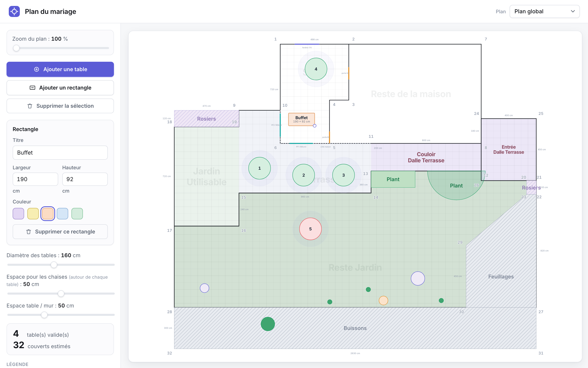
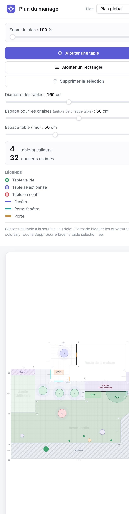

Logo

Aperçu — Plan global (desktop)



Palette
Indigo#5B5BD6
Vert (valide)#1F9D63
Rouge (conflit)#E5484D
Ink#16181D
Fond#F6F7F9
Ligne#E7E9EE
Choix principaux
- Typo unique — Inter en plusieurs graisses, chiffres tabulaires.
- Accent unique — indigo pour primaire / focus / sélection.
- Système d'états — vert = valide, rouge = conflit, indigo = sélection.
- Plan neutre — gris froids ; seules les tables et ouvertures sont colorées.
- Coins numérotés en gris froid quasi invisible.
- Cartes flat — hiérarchie par les tons, micro-ombres nettes, 7–10 px.
- Icônes SVG linéaires, zéro emoji.
- Logo app-tile indigo « table + places ».